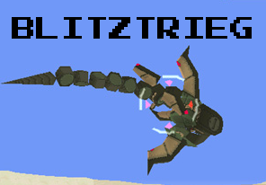

^Yes, I know it's spelled Blitzkrieg. :P
Overview
The Bonnes have taken over Kimotoma City, and it's up to you to liberate the town and nab the key before they get to it! Tiesel guards the ruin entrance with his new mech, the Blitzkrieg. It holds the city's priceless (not really) statue, in hopes that Megaman won't fight him as to not wreck the statue in the fight. However, Megaman may be able to defeat the Blitzkrieg without damaging the statue...
The Blitzkrieg is a rather interesting boss, as there are two ways to defeat it. Should you wreck the rather cheap statue, Tiesel will change his attack pattern completely and you'll have to fork over 5,000 zenny to repair it. It is possible to knock this guy out leaving the statue intact, despite the fact that Teisel doesn't recognize it after the battle (lazy Capcom XD), and you'll get good Karma points to boot! The Blitzkrieg appears stagnant throughout the fight, but one the heavy burden of the statue is lifted off of it's shoulders, Tiesel changes his attack plan to one that is both stealthy and speedy, hiding beneath the rather deep sand native to Saul Kada. He also has various Servbot Moles (more info below) that keep you busy as well.
Movelist
Everything but the Kitchen Sink
With the statue still intact, Tiesel will throw various items that have been pillaged from the islanders. These items vary heavily (I think I saw a comic book once), but the damage is still the same. You can dodge it, but the act of climbing on his platform or shooting him will cause him to guard instantly, creating a psuedo-stalemate.
Electric Disc
Should you decide to stray away from the main platform when Tiesel's playing peek-a-boo, he'll opt to throw two electric disks at you. These cover a large distance and have a tracking ability that rivals the ones Klaymoor threw. You can jump over these if you're on one of the 4 outer platforms, otherwise that sand is going to play some funny games with your movement. You can roll out of this one if need be.
Drill Spike "I'll get you!"
If/When you destroy the statue, Tiesel will change up his movement pattern, moving around quickly under the sand and popping up every so often. With this attack, he'll leap out of the sand and fire the end bit off of his tail, which will then proceed to home in on you. Rule of Thumb: Don't Lock-on during this move. You'll often get distracted and take this move head-on. Instead focus on running around on the now-free platform, and jump/roll if necessary.
Good Weapons to Use
Buster Cannon
This is what you use when you want to preserve the statue. No other weapon in the game is capable of hitting the opponent without leaving some sort of explosion (Hunter Seeker's unreliable here due to rapid fire; you need one strong shot, and Machine Gun Arm's bad for the same reason). Whenever he leaves himself open, fire one of these bad boys and Teisel will take some damage, and proceed to guard again. Lather, rinse, and repeat.
Ground Crawler
This is what you use when you don't give a squid about the statue. These powerful, tracking bombs will destroy the statue before you can say "Uncle Digg", causing Teisel to flee in Terror. As soon as he pops his head up from the sand, fire a stream of these these things at him. He should go down in seconds.
Synopsis
I rather liked the green land-shark (almost reminds me of Garchomp), but there were a couple of hiccups, namely the cut scene afterward. It wouldn't have killed Capcom to make a separate cutscene for preserving the statue, as it's very confusing the first time you do it. They also could've given Teisel a couple of extra moves for his second moveset, but I guess the Servbots were pretty much filler in that case. Still, this was a pretty fun boss overall, so the Blitzkrieg rates an 8/10!